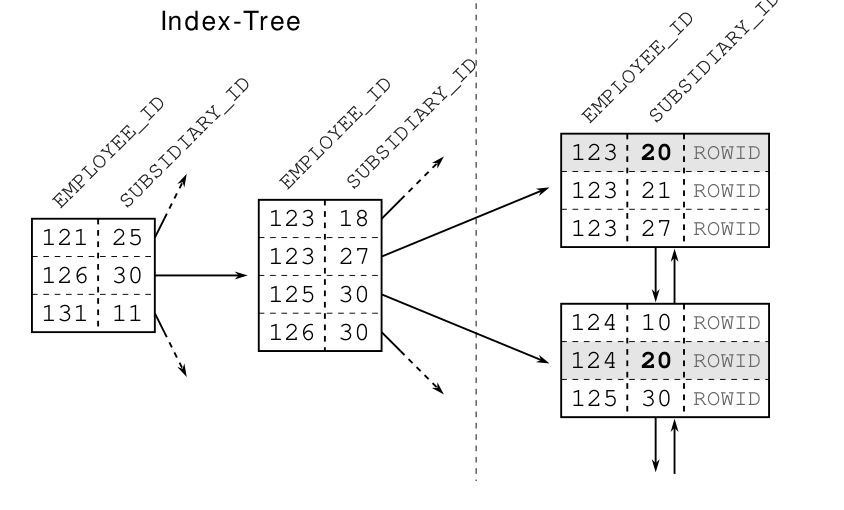

Chương 2: Câu lệnh Where
Cơ sở dữ liệu không sử dụng chỉ mục vì nó không thể sử dụng các cột đơn lẻ từ một chỉ mục nối kết một cách tùy ý. Một cái nhìn gần hơn vào cấu trúc chỉ mục làm điều này trở nên rõ ràng.
Một chỉ mục nối kết chỉ là một chỉ mục B-tree như bất kỳ chỉ mục nào khác giữ dữ liệu đã được chỉ mục trong một danh sách được sắp xếp. Cơ sở dữ liệu xem xét mỗi cột theo vị trí của nó trong định nghĩa chỉ mục để sắp xếp các mục chỉ mục. Cột đầu tiên là tiêu chí sắp xếp chính và cột thứ hai xác định thứ tự chỉ khi hai mục có cùng giá trị trong cột đầu tiên và cứ thế.
Thứ tự của một chỉ mục hai cột do đó giống như thứ tự của một danh bạ điện thoại: nó được sắp xếp trước theo họ, sau đó theo tên. Điều đó có nghĩa là một chỉ mục hai cột không hỗ trợ tìm kiếm chỉ trên cột thứ hai; điều đó sẽ giống như tìm kiếm một danh bạ điện thoại theo tên.

Trích đoạn chỉ mục trong Hình 2.1 cho thấy rằng các mục cho công ty con 20 không được lưu trữ cạnh nhau. Cũng rõ ràng rằng không có mục nào với SUBSIDIARY_ID = 20 trong cây, mặc dù chúng tồn tại trong các nút lá. Do đó, cây này là vô dụng cho truy vấn này.
14